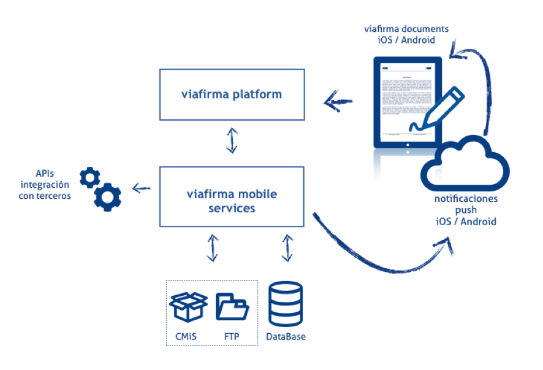

Visión General de la Solución
La solución viafirma mobile services forma parte de un ecosistema compuesto por otros componentes no descritos en este manual y que son necesarios para su funcionamiento.
Como parte de la suite de viafirma, los componentes necesarios son:
- viafirma platform
- viafirma manager
- viafirma mobile services
- viafirma document iOS y Android
En este manual sólo se describe el procedimiento de instalación y configuración de viafirma mobile services. El resto de componentes tiene su propia documentación que deberá ser consultada en cada caso.
